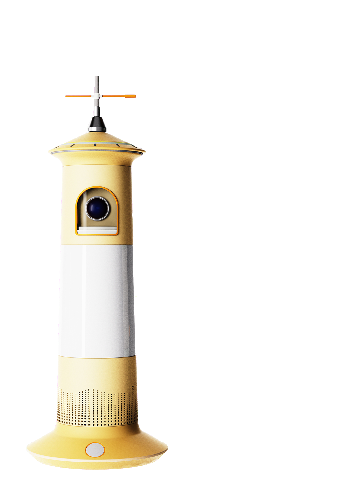
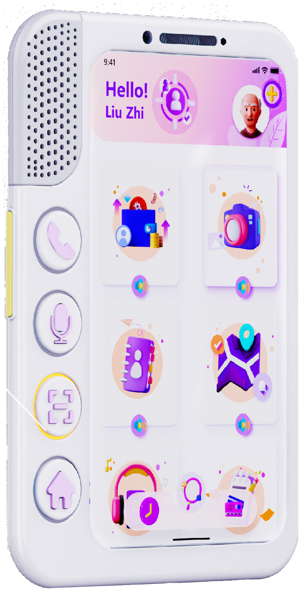
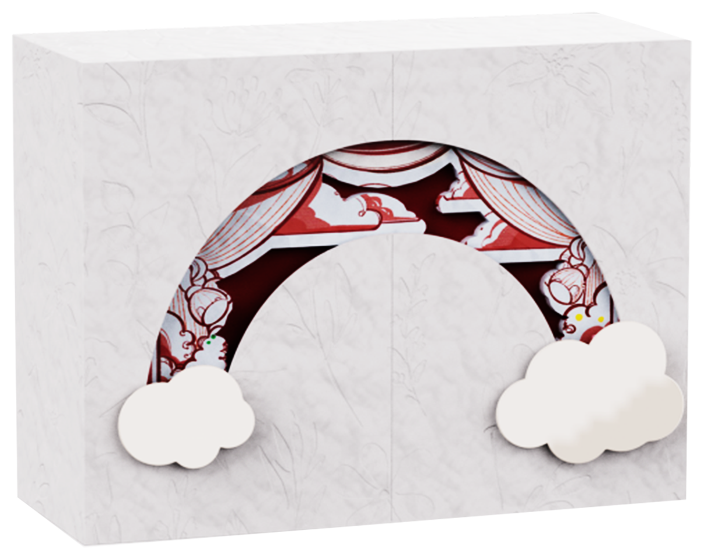
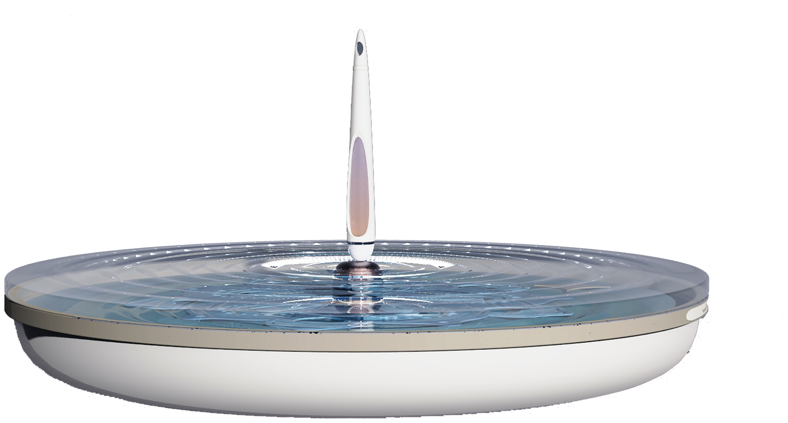
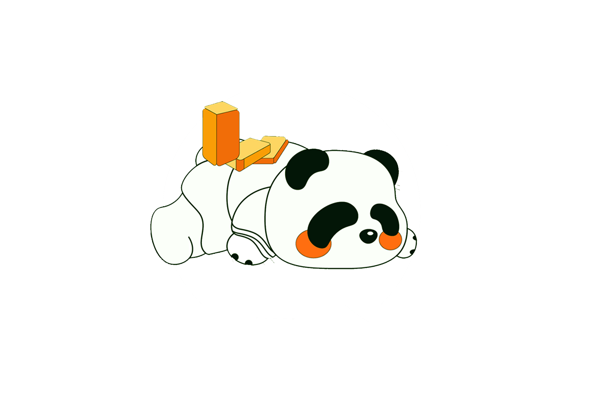

Working as a designer has taught me to observe before creating. I have learned to understand who I am designing for, how people's needs shift across different contexts and stages, and how to translate these observations into practical design decisions. For me, design is about applying visual thinking and aesthetic methodologies to real-world needs, finding a balance between function, experience, and expression.